• Drag the left cursor to make a mesh from its shell.
• Hold SHIFT to snap to the grid.
• Press C to toggle constraint rendering.
• Press Q to toggle triangle quality coloring.
• Press G to toggle grid rendering.
This project is a mesh generation tool for Finite Element Analysis(FEA) simulations.
FEA is a numerical method to solve differential equations. It does this by discretizing space into small elements, which fundamental physics laws can be applied to. Think of using many nodes and connections to analyze the structure of an object. This program covers the first part of these simulations: the construction of meshes wherein the elements are more or less uniform in shape and size.
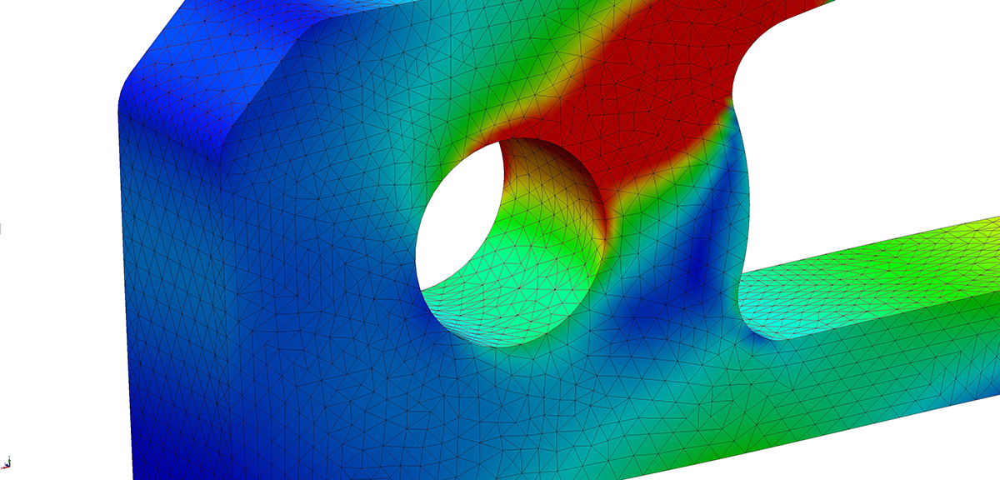
To do this, the input to my program is the 2D shell of an object, represented by a list of points. To ensure the vertexes of the mesh are properly spaced, before adding one to the mesh, the algorithm first makes sure it is some minimum radius from all other vertexes. The user-made shell is walked along, each point being added. A constraint is just a connection from one vertex to another. The shell is added as a cyclic list of constraints: 0 to 1, 1 to 2 ... n-2 to n-1, n-1 to 0
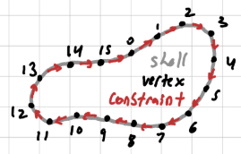
To realize the insides of the shape, a poisson-disc sampling method is used which evenly spaces the points. Before their addition, a ray-polygon algorithm is used to ensure the candiate point is inside the constraint shell.
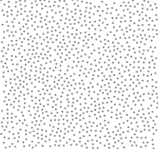
This list of vertexes and constraints is sent through a Constrained Delaunay triangulation(CDT). Delaunay triangulation is the process of triangulating the convex hull of a set of points such that no triangle's circumcircle contains any other point. In layman's terms, this algorithm tends to avoid sliver triangles. It being constrained just enforces a set of edges(in our case the shell) to be present in the final triangulation.
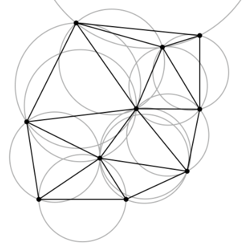
Finally, all of those triangles are pruned to ensure their center lies within the constraint shell. After all that, the user is left with a mesh with good shape regularity and discretization quality.
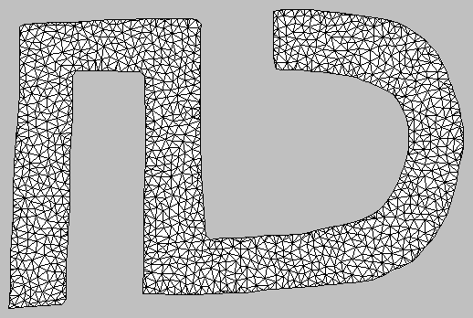
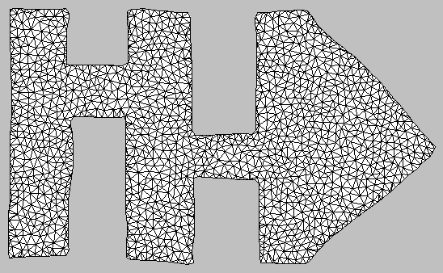
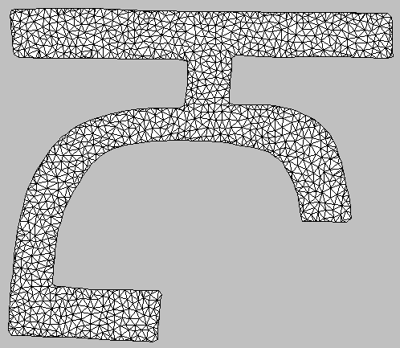
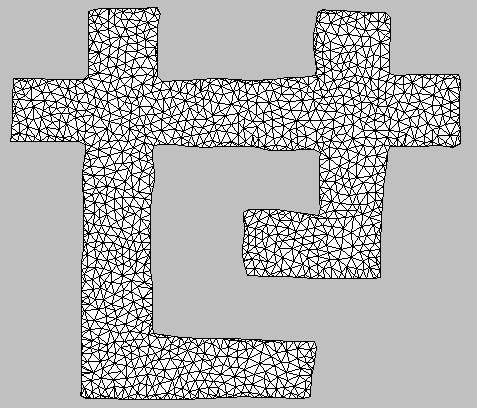
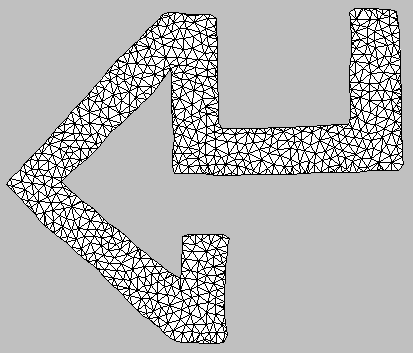
To quantify the quality of the triangles, I used the aspect ratio as a measure. The aspect ratio of a triangle can be defined as the ratio between its circumradius and twice its inradius. The circumradius is the radius of its the circle that contains the triangle. The inradius is the radius of its the circle that the triangle contains. For those of you keeping track at home, the factor of 2 comes from an equilateral triangle's R:r ratio being 2:1.
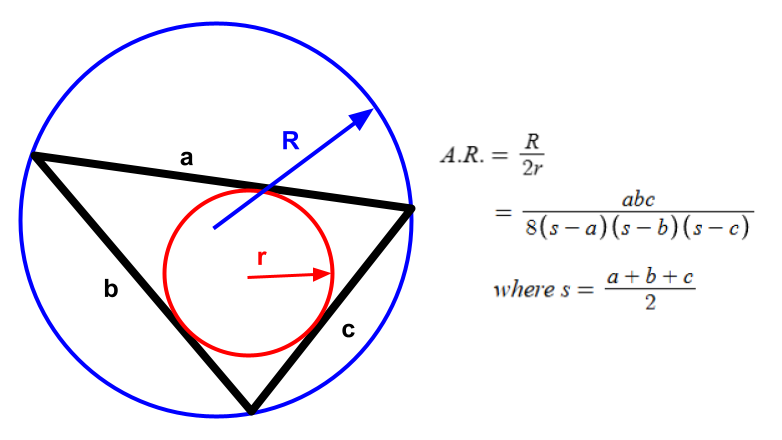
A scientific gradient of blue to red being good to bad can be applied. Using it as the triangle's fill color, you can see the distribution of aspect ratios.
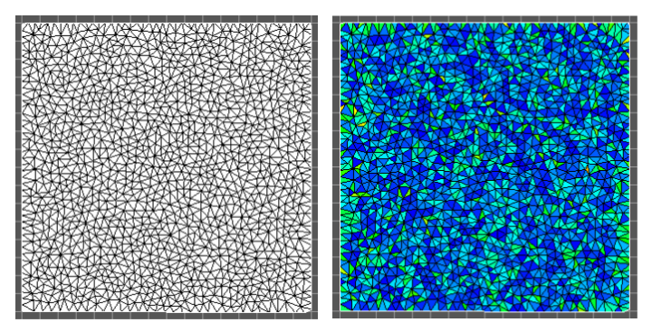
The applications of FEA are quite interesting to me.
Just this dispersion of nodes and connections can help simulate:
• Structural Analysis for stress propagations
• Fluid Flow for plumbing systems
• Heat Transfer for HVAC
• Electromagnetic Potential for circuits
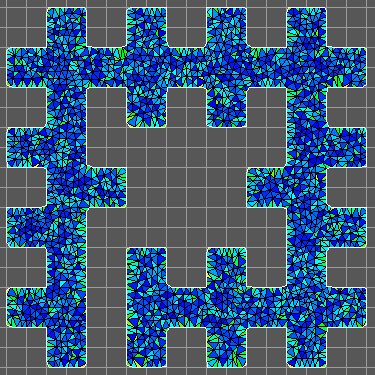
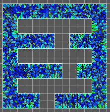
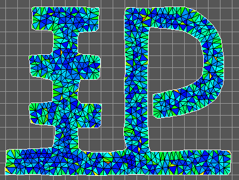
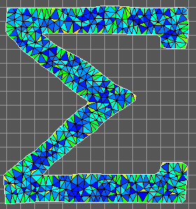